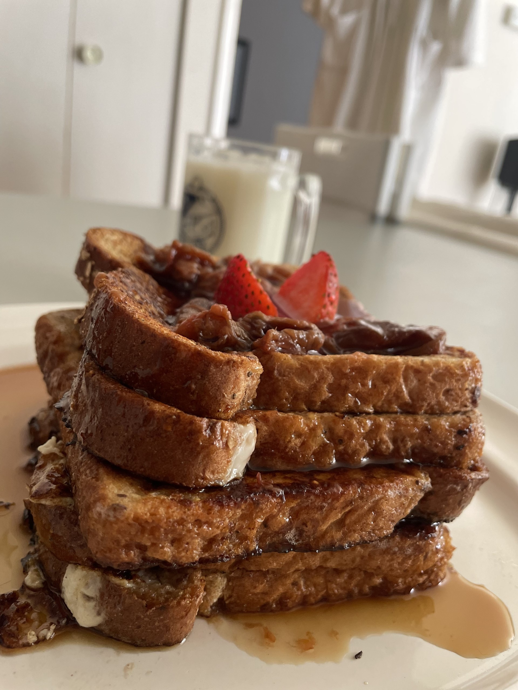

Mateo's French Toast Recipe:
This recipe is an effortless way to make French toast. French toast is my favorite because the taste of the bread, egg, and syrup combination is immaculate. French toast is also a major source of carbohydrates and does not require too many ingredients.

Ingredients
- 6 slices of any bread
- 2 large eggs
- ¼ cup milk
- 1 tsp sugar
- ¼ tsp cinnamon
- Sprinkle bit of salt
- Splash of vanilla extract
- Butter and Vegetable oil on pan before cooking
Instructions to cook
- Get a pie plate and in that plate crack 2 eggs
- Break the eggs down with a fork before adding further ingerdients
- Add your ¼ cup of milk, 1 tsp of granulated sugar and a ¼ teaspoon of cinnamon
- Mix well with a fork
- Add a ⅛ teaspoon of salt and a teaspoon of vanilla extract
- Mix again until the eggs are real smooth
- Get a frying pan
- Add a teaspoon of vegetable oil and a teaspoon of butter on the pan
- Heat the pan to medium high
- Cook until golden brown sides
- Serve with maple syrup
Acknowledgment
I, Mateo, fully acknowledge that all homepage files must be renamed to index.html. I have tested this website on https://tinyurl.com/cst10sites and will also do so with upcoming assignments. My code has been checked on https://validator.w3.org/ and has been corrected. Failure to do so will result in severe loss of marks.
©